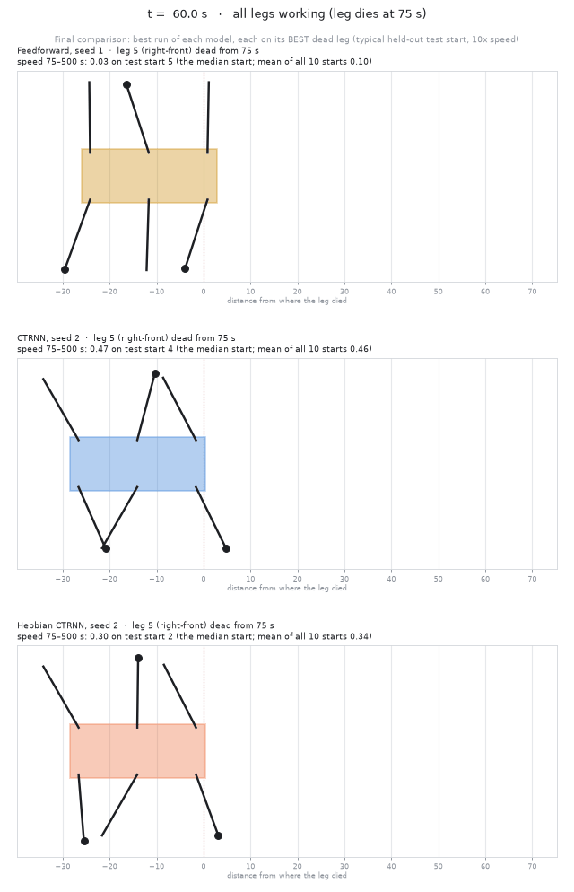
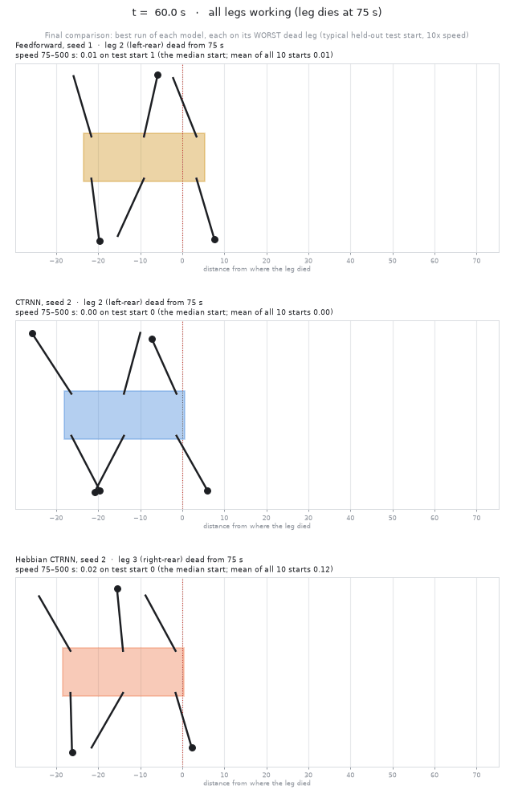
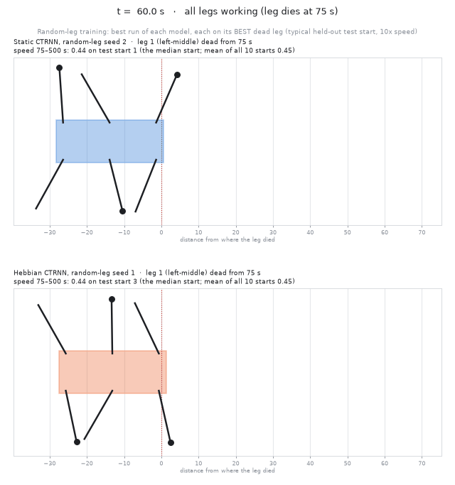
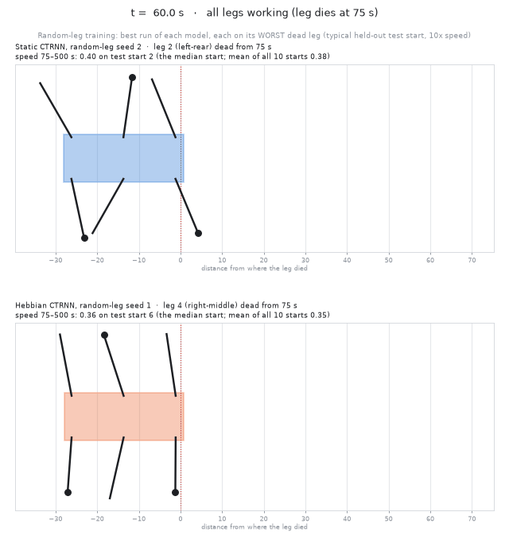
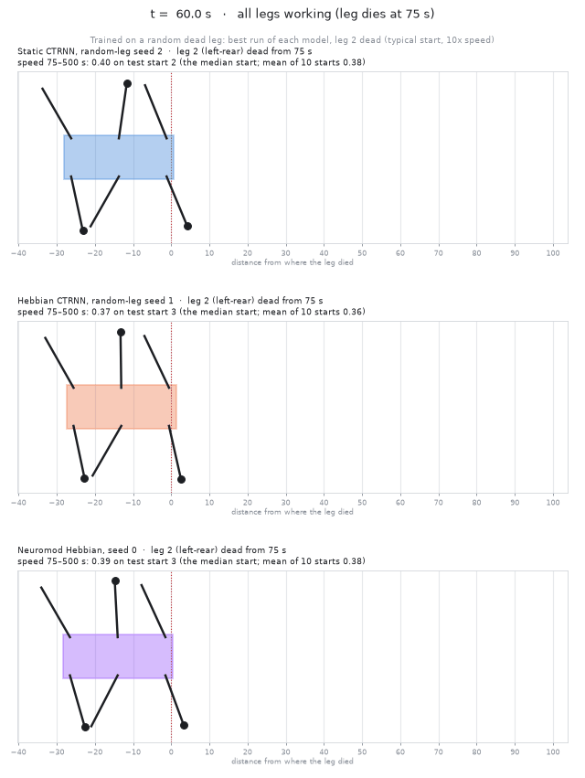
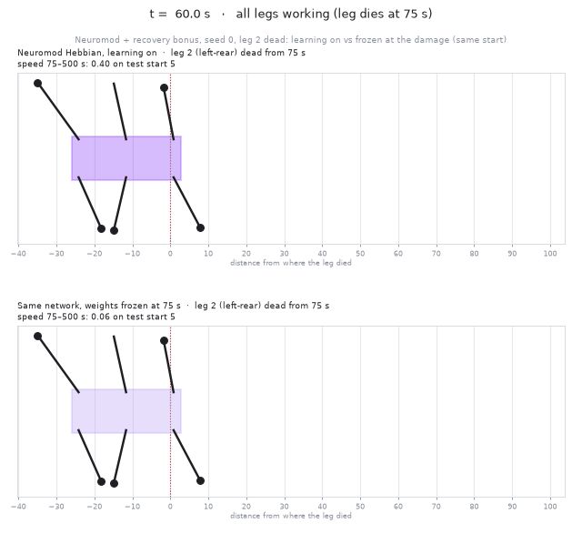
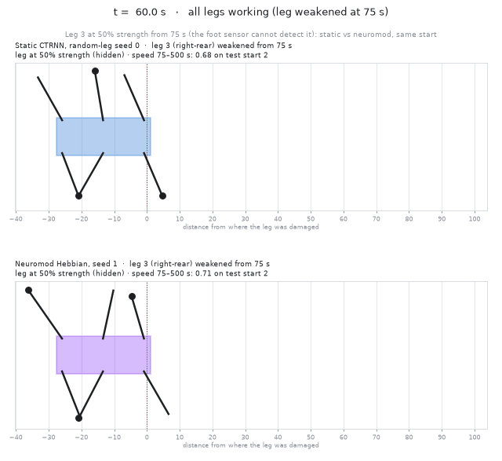
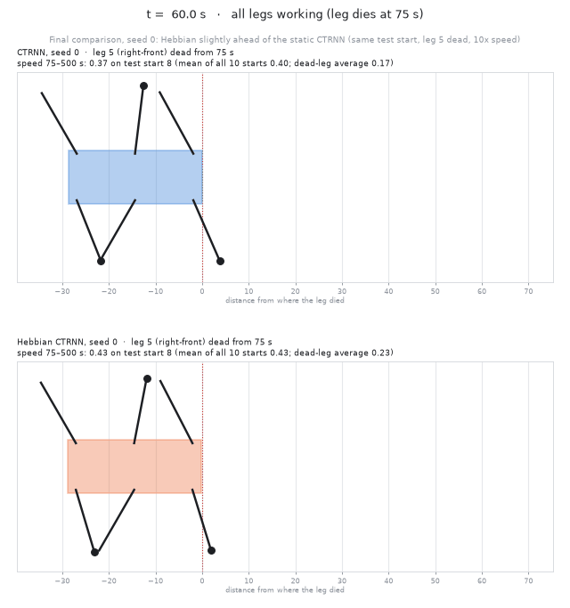

Hexapod Gait Videos
Dane C. Verkouteren, Rose-Hulman Institute of Technology. One leg is damaged at 75 s (shown in red). Played at 10× speed.
Trained on one dead leg: easiest leg
Feedforward, CTRNN and Hebbian CTRNN with leg 5 dead.

Trained on one dead leg: hardest leg
The same three controllers on the leg each handles worst.

Trained on a random dead leg: easiest leg
Static CTRNN and Hebbian CTRNN with leg 1 dead.

Trained on a random dead leg: hardest leg
Static CTRNN (leg 2 dead) and Hebbian CTRNN (leg 4 dead).

Neuromodulated walker vs the other models
Trained on a random dead leg: static CTRNN, Hebbian CTRNN and neuromodulated Hebbian CTRNN with leg 2 dead.

Neuromodulated walker: learning on vs frozen
The same network on the same start. Bottom: its weights stop changing when the leg dies.

Hidden damage: weakened leg
Leg 3 at half strength, which the foot sensor cannot detect. Static CTRNN (top) vs neuromodulated (bottom), same start.

CTRNN vs Hebbian CTRNN, same start
Seed 0 with leg 5 dead.
